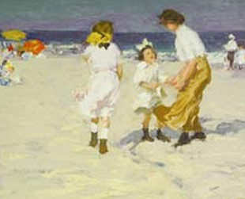

Permanent Collection
The Lyman Allyn Art Museum's collection is the most significant art collection in Southeastern Connecticut . It is the only museum in the area to offer a comprehensive collection of European art as well as American fine and decorative art. The permanent collection is comprised of approximately 10,000 objects, a key strength of which is the collection of European works on paper. Much of this collection was developed by the Museum's first Director, Winslow Ames, who acquired works dating from the 16th through the 19th centuries. The collection includes the very important graphite Study for Madame Moitessier Standing by J.A.D. Ingres as well as works by Frederic Leighton, Francois Boucher, Nicholas Poussin, Claude Lorrain, Charles LeBrun, and Tiepolo.
The Museum, however, is best known for its holdings in American art. The Lyman Allyn's collection of 19th century American paintings, ranging from the Hudson River School to the Aesthetic Movement and Impressionism, includes many works of art historical significance. Thomas Cole's Mount Aetna from Taormina (1844), Frederic Edwin Church's Study for New England Scenery (1850), and John F. Kensett's oval Bash Bish Falls (1851) are key Hudson River School paintings and Winslow Homer's tile painting The Shepherdess (1878) is a rare and important example of this American master's work with the Tile Club. These American works, along with several key European works, are frequently requested for loan exhibitions and for reproduction in scholarly articles and exhibition catalogues.
Complementary to the Museum's collection of nineteenth-century American paintings, is the sizeable collection of eighteenth-century American paintings, works on paper, and decorative arts, most notably silver and furniture. John Singleton Copley's three studies for The Siege of Gibraltar (c.1785-86), two works by Benjamin West, and Winthrop Chandler's portrait of Eunice Huntington Devotion and Her Daughter (1772) form the core of this collection. The furniture collection is particularly strong in eighteenth-century New England furniture, including many examples of New London County 's unique regional variations. New London County furniture has been the focus of a comprehensive exhibition at the Lyman Allyn in 1974 and smaller, focused exhibitions in 1986 and 1999.
Our exhibitions have been funded in part by generous grants from the Frank Loomis Palmer Fund, Bank of America, Trustee and the Connecticut Humanities Council, with support from the Connecticut Commission on Culture and Tourism.
For information on the Museum Exhibitions, contact: Dr. Nancy Stula, Director and Curator, Lyman Allyn Art Museum. For general information, please email us at info@lymanallyn.org